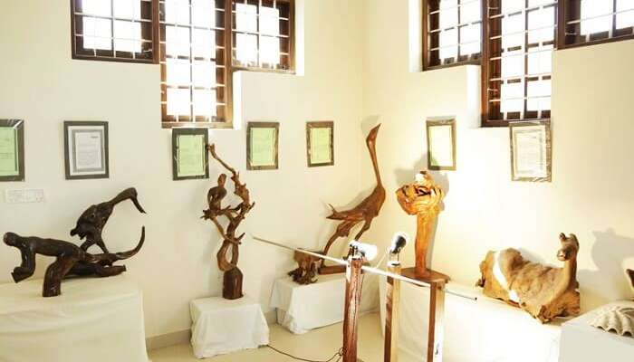

Elaveezha Poonchira

Nadukani

Nattakom & Panachikkad

Marmala Waterfalls

Kottayam is a city in the Indian state of Kerala. It is the pride of God’s own country with its beautiful churches, charming nearby hill stations, significant temples, and refreshing waterfalls.The city is an important trading center of spices and commercial crops, especially rubber. Most of India's natural rubber originates from the acres of well-kept plantations of Kottayam, also home to the Rubber Board.Flanked by the Western Ghats on the east and the Vembanad Lake and paddy fields of Kuttanad on the west, Kottayam is a place that is known for extraordinary qualities. It is the district headquarters of Kottayam district, located in south-west Kerala.